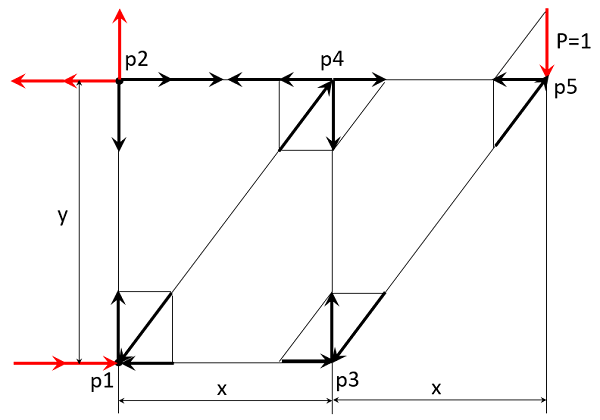

1 | Ферма: метод узлов |
_.1 | a - единичная нагрузка вверх; b-вправо; c-вниз; d-влево; |
_.2 | x - шарнир с 1 степенью свободы; y-2 степени; z - заделка; |
_.3 | по числу узлов j можно определить число эл-тов, если j=3 |
_.4 | число эл-тов m = 2*j-3 = 2*3-3=3 | insure stabilty |
_.5 | если эл-тов меньше - unstable equilibrium |
_.6 | если эл-тов больше - statically indeterminate |
_.7 | обход нужно начинать с точки где 2 неизвестные реакции |
2 | Ферма: задача 1 |
_.1 | узлы j=3: p1x=[0,0]; p2y=[0,4], p3
c=[3,4] |
_.2 | эл-ты m=3: p1p2, p1p3, p2p3 |
_.3 | 1=4 & p1p3=5 => p1p3 = 5/4 = -1.25 |
_.4 | p2p3 = p1p3*3/5 = (5/4)*(3/5) = 0.75 |
_.5 | p1p2 = p1p3*4/5 = (5/4)*(4/5) = 1 |
_.6 | проверка: sqrt(1+0,75^2) = sqrt(1.5625) = 1.25 |
3 | Ферма: задача 2 |
_.1 | узлы j=5: p1x=[0,0]; p2y=[0,4], p3=[3,0], p4=[3,4], p5=[6,4], |
_.2 | эл-ты m=2*5-3=7: p1p2, p1p3, p1p4, p2p4, p3p4, p3p5, p4p5 |
_.3 | из предыдущей задачи: p4p5=0.75, p3p4=1, p3p5=-1.25 |
_.4 | узел p3: h: p1p3=-1.25*(3/5) = -0.75 |
_.5 | p4 | v: p1p4=1*5/4=-1.25 | h: p2p4-(1.25*3/5)=0.75 => p2p4= 1.5 |

4 | Ферма: задача 3 |
_.1 | узлы j=5: p1x=[0,0], p2=[0,2] p3y=[0,4], p4=[1.5,2], p4=[1.5,4], p5=[3,4] |
_.2 | p1 | R=P*x/y =3/4=0.75 | p1p4*3/5=R | p1p4=(5/3)*(3/4)=1.25 |
_.3 | p6 из задачи 1 | p5p6=p1p3=-1.25 |